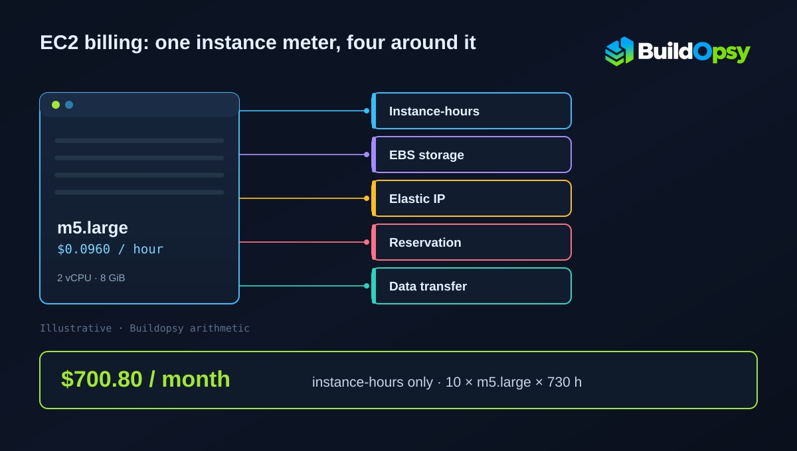

AWS EC2 Pricing and Billing: The Meters Around the Instance-Hour
The instance-hour gets the attention and a fraction of the bill. This page prices EC2 cost per hour and monthly cost for thirteen instance types in US East, at the rates AWS published on 29 October 2026, then adds the meters that sit around them: the 60-second floor, attached storage, idle addresses, reservations you did not use and credits you burned.
TL;DR: Ten m5.large instances running all month bill $700.80 at $0.0960 per instance-hour across 730 hours. The same ten instances launched ten thousand times for 30 seconds bill $16.00 for 83.33 hours of wall-clock work, because the 60-second floor doubles the billed hours. A Capacity Reservation for 20 instances with 12 in use charges $560.64 for capacity nobody touched.

1. What the Hourly Rate Actually Buys
An On-Demand rate is a price for runtime, not for work done. AWS describes it as capacity by the hour or second with no long-term commitment, and it does not fall when the CPU sits idle. A ten-instance fleet that serves nothing for a month costs the same as one under load. Utilization changes how many instance-hours you need. It does not change the rate.
The same list separates what the instance charge covers from what it does not. Storage, addressing, load balancing, monitoring and transfer are named as their own products on the same page. That structure is the reason an EC2 line on a bill can be a third of a compute-heavy bill and a rounding error on a storage-heavy one.
2. Thirteen Rates to Anchor Against
These are Linux On-Demand rates for US East (N. Virginia), read from AWS's published EC2 pricing data, file published 29 October 2026 and read on 30 October. Each row is a different shape of workload: burstable, general purpose, compute-heavy and memory-heavy.
| Instance type | vCPU | Memory | USD per instance-hour | Monthly at 730 h |
|---|---|---|---|---|
| t3.micro | 2 | 1 GiB | $0.0104 | $7.59 |
| t4g.small | 2 | 2 GiB | $0.0168 | $12.26 |
| t3.small | 2 | 2 GiB | $0.0208 | $15.18 |
| t4g.medium | 2 | 4 GiB | $0.0336 | $24.53 |
| t3.medium | 2 | 4 GiB | $0.0416 | $30.37 |
| c7g.large | 2 | 4 GiB | $0.0725 | $52.93 |
| c5.large | 2 | 4 GiB | $0.0850 | $62.05 |
| m5.large | 2 | 8 GiB | $0.0960 | $70.08 |
| m6i.large | 2 | 8 GiB | $0.0960 | $70.08 |
| r5.large | 2 | 16 GiB | $0.1260 | $91.98 |
| c5.xlarge | 4 | 8 GiB | $0.1700 | $124.10 |
| m5.xlarge | 4 | 16 GiB | $0.1920 | $140.16 |
| r5.xlarge | 4 | 32 GiB | $0.2520 | $183.96 |
The monthly column is Buildopsy arithmetic: rate multiplied by 730 hours, the average month at 8,760 hours a year. It is a standing-cost reference, not a quote. Windows, SQL Server, RHEL and SUSE images bill on their own rate cards, and a Region outside US East carries its own table.
Two rows are worth comparing. c7g.large and c5.large both offer 2 vCPU and 4 GiB, and the Graviton option lists at $0.0725 against $0.0850, a difference of $9.125 a month per instance, $9.13 rounded. On a hundred instances that is $912.50 a month for the same core count. Whether it is available to you depends on architecture support, which is a migration question rather than a pricing one.
3. The 60-Second Floor
Partial instance-hours bill by the second, and that sentence usually gets read as "a 30-second job costs 30 seconds". It does not. The EC2 pricing page states a 60-second minimum, so anything shorter bills a full minute. SUSE Linux Enterprise Server is the single exception listed: those instances bill a full hour regardless.
The effect compounds faster than most people expect. Take ten thousand short jobs at 30 seconds each on m5.large:
- Wall-clock runtime: 10,000 × 30 s = 300,000 s = 83.33 hours
- Billed runtime at the 60-second floor: 10,000 × 60 s = 600,000 s = 166.67 hours
- Cost: 166.67 × $0.0960 = $16.00
The work took 83.33 hours and the bill covers 166.67, exactly double. Had the floor not applied, the same work would have priced at $8.00. That is the whole arithmetic: in this example, half of every launch is a payment for time the job never used. A 45-second launch wastes less of its minute; a 5-second launch wastes almost all of it.
The floor is not the enemy of batching, it is the argument for it. Launching once for 600 seconds bills 10 minutes; launching ten times for 60 seconds bills the same 10 minutes; launching twelve times for 30 seconds bills 12 minutes for 6 minutes of work. Where a workload can be packed into fewer, longer runs, the meter rewards it and nothing else has to change.
4. What Keeps Billing After the Instance Stops
Stopping an instance ends the instance charge. Several things attached to it keep their own meters running, and AWS names them on the same pricing page rather than in a footnote.
Attached EBS volumes bill by provisioned GB-month whether the instance is running or not, which is why an idle fleet can still produce a storage line. Provisioned EBS storage also bills in one-second increments with the same 60-second minimum, and per-second billing applies to every purchase option. Every in-use and idle Elastic IP address is charged, and the page points to the VPC pricing table for the rate. Load balancing and CloudWatch sit on their own pages. Auto Scaling is the one piece that carries no separate fee: the service is free, while the instances it launches and the monitoring they enable bill normally.
The pattern to look for is a resource that outlives its owner. A stopped instance with a 500 GB volume and a reserved address still produces a small monthly storage and address charge.
5. Capacity Reservations Bill the Capacity
An On-Demand Capacity Reservation is priced exactly like the equivalent On-Demand usage. The page then makes the part people miss explicit: if the reservation is fully used you pay instance usage and nothing more, and if it is partially used you pay for the unused portion as well.
Twenty reserved m5.large instances with twelve running for a full month:
- Reservation: 20 × 730 × $0.0960 = $1,401.60
- Used: 12 × 730 × $0.0960 = $840.96
- Idle capacity: 8 × 730 × $0.0960 = $560.64
A reservation bills capacity for as long as it is held, whether or not an instance is running in it. That trade is worth making when the capacity has to exist at a moment you cannot predict; otherwise the reservation pays for an option you are not using.
6. Purchase Options and What "Up To" Means
For the two discount mechanisms this comparison cares about, AWS publishes headline ceilings rather than rates. Savings Plans are described as reducing the bill by up to 72% against On-Demand in exchange for a usage commitment, and Spot capacity as a discount of up to 90% against On-Demand. EC2 has other purchasing routes, including Reserved Instances, Dedicated Hosts, Dedicated Instances and Capacity Blocks, and each carries its own terms.
Both phrases are ceilings. A Savings Plan's effective rate depends on the commitment amount, the term and the instance families it covers. A Spot price moves with available capacity. Neither is a figure a budget can be built on without pricing the specific commitment first.
At the published ceiling, the arithmetic on a $0.0960 m5.large would be $0.0269 per hour, or $19.62 across 730 hours. That is a ceiling illustration built on AWS's stated maximum, not a quoted rate, and a real plan can land well above it. The gap between the headline and the achievable number is the reason commitments get modelled against actual usage rather than against a discount percentage.
A separate path is capacity rather than price. A Dedicated Host is a physical server reserved for one account, bought hourly On-Demand or through Savings Plans, and AWS lists reusing existing server-bound software licences first among the uses it gives for Dedicated Hosts. Capacity Blocks for ML reserve GPU instances ahead of a run. Both change what you are permitted to run, which is a different question from what an instance-hour costs.
Spot needs its own warning. A discount that reaches 90% is payment for the risk of interruption, so the workloads that fit are the ones that can be stopped and restarted without a person noticing. A stateful database on Spot has to be priced against its recovery time as well as its discount.
7. Burstable Instances and the Credit Bill
T-family instances accumulate CPU credits while they idle and spend them when they burst. In Unlimited mode they can keep bursting past the balance, and the surplus is charged. AWS publishes the surplus rate per vCPU-hour, and it does not change with instance size or purchase model.
- T2 and T3 on Linux, RHEL and SLES: $0.05 per vCPU-hour
- T4g on Linux, RHEL and SLES: $0.04 per vCPU-hour
- T8i on Linux, RHEL and SLES: $0.06 per vCPU-hour
- T2 and T3 on Windows and Windows with SQL Web: $0.096 per vCPU-hour
- T8i on Windows and Windows with SQL Web: $0.1152 per vCPU-hour
A t3.medium is 2 vCPU, so ten surplus hours across both cores is 20 vCPU-hours and $1.00 at the Linux rate. That is small next to the $30.37 monthly instance price, which is the honest way to read it: the credit meter is rarely the line that breaks a budget, but it is a real charge and it appears without a launch event to explain it.
8. Licences, and the One Lever That Cuts Them
Windows and SQL Server are licence-included images, so their hourly rate bundles the guest licence into the instance price. AWS exposes a lever here that has no Linux equivalent: Optimize CPUs, which sets a lower vCPU count or disables hyper-threading on an instance while the underlying instance type stays the same.
The published savings per vCPU-hour removed are $0.046 for Windows Server, $0.421 for Windows with SQL Enterprise, $0.166 for SQL Standard and $0.063 for SQL Web. An m5.2xlarge has 8 vCPU; dropping to 4 saves 4 × 730 × $0.046 = $134.32 a month on the Windows licence component alone. The instance still bills its own rate, and other operating systems are unaffected by the feature.
That asymmetry matters when comparing a Windows fleet with a Linux one. The Linux comparison is instance rate against instance rate. The Windows comparison has to add back whatever licence capacity you actually need, because cutting vCPUs below what the workload needs forces more instances or longer runs, and that cost has to be weighed against the licence saving.
9. Data Transfer Is Aggregated, Not Per-Service
Outbound transfer is the meter most likely to be attributed to the wrong service. AWS states that its rate tiers use aggregate data transfer out to the internet across EC2, S3, Glacier, RDS, Redshift, SageMaker, SES, SimpleDB, SQS, SNS, DynamoDB, Storage Gateway, CloudShell and CloudWatch Logs. A terabyte leaving an EC2 load balancer and a terabyte leaving an S3 bucket land on the same tier ladder.
AWS also states that customers receive 100 GB of free data transfer out to the internet each month, aggregated across all AWS services and Regions except China and GovCloud. Above that, the per-gigabyte rate is set by the aggregate volume tier, which is why the same transfer can price differently in two months without any change to the workload.
10. The Verdict
An EC2 bill is a runtime meter surrounded by meters that do not care whether anything ran. The hourly rate is easy to quote and poor for planning, because the three charges that surprise people are structural rather than accidental: a floor that doubles short launches, storage and addresses that outlive a stopped instance, and reservations that bill capacity rather than use.
The design question that follows is how many separate meters the workload switches on, and how long each of them stays on. A fleet that launches once and runs for a month is priced on one meter. The same work split into ten thousand short launches is priced on the same meter with twice the hours, then a storage meter and an address meter that never turns off.
Frequently Asked Questions
How much does an EC2 instance cost per hour? In US East (N. Virginia) on Linux On-Demand rates published 2026-10-29, the modelled examples run from $0.0104 for t3.micro to $0.2520 for r5.xlarge. Windows, SQL Server, RHEL and SUSE bill on separate rate cards.
Is EC2 billed per second or per hour? Partial instance-hours bill per second for Linux, Windows, Windows with SQL Server, RHEL and Ubuntu Pro, with a 60-second minimum. SUSE Linux Enterprise Server bills a full hour.
Why did a 30-second launch bill a whole minute? The 60-second minimum applies to any launch shorter than a minute, so ten thousand 30-second launches bill 166.67 instance-hours for 83.33 hours of work.
Does a stopped instance still cost money? The instance charge stops. Attached EBS volumes keep billing by provisioned GB-month, Elastic IP addresses bill whether in use or idle, and snapshots and other dependent resources continue.
Does the calculator include EBS, Elastic IP or data transfer? It models instance-hours, the 60-second floor and attached EBS volumes. Addresses, NAT gateways, load balancers and transfer are separate meters and are not included.
What is Unlimited mode and when is it charged? T-family instances can burst past their credit balance in Unlimited mode, and surplus credits bill per vCPU-hour: $0.05 for T2 and T3 on Linux, $0.04 for T4g, $0.06 for T8i, and $0.096 for T2 and T3 on Windows.
Do I pay for a partially used Capacity Reservation? Yes. Reservations are priced like equivalent On-Demand usage, and a partially used one also bills the unused portion.
How much does EC2 cost per month? At 730 hours a month, the modelled US East Linux rates give $7.59 for one t3.micro, $30.37 for one t3.medium, $70.08 for one m5.large and $183.96 for one r5.xlarge. EBS, addresses and transfer are extra.
How can I estimate my EC2 monthly cost? Multiply instance count by hourly rate and billable hours, add the 60-second floor for short launches, then add EBS by provisioned GB-month and any address or transfer meter. Run the figures through the EC2 cost calculator with your Region's rates.
Sources and Method
Every rate in the table is read from AWS's published EC2 On-Demand pricing data for US East (N. Virginia), file published 2026-10-29T17:56:34Z, filtered to Linux with no pre-installed software and no licence model. The per-type rate codes are t3.micro CRAJUW7BTXFMT2UJ, t4g.small 9GWX7R3VJUG9P8Y8, t3.small QA3NBPZEQKZ2K9AR, t4g.medium E2KFUE6DHVS3HDJM, t3.medium NN4EGUUQRWVYP98C, c7g.large 9B39KMDC8628VV55, c5.large 6U6GZ2DN4RFCJ7D9, m5.large 6C86BEPQVG73ZGGR, m6i.large B8JJ44GS8MG4RPR4, r5.large NCTEFNHKJC398BJB, c5.xlarge 35AEEWH98DECPC35, m5.xlarge 5G4TA8Z4MUKE6MJB and r5.xlarge TZG8KMRSS5ASP78Y. Billing mechanics, the 60-second minimum, the SUSE exception, Elastic IP and Capacity Reservation treatment, unlimited-mode credit rates, Optimize CPUs savings, Auto Scaling fee treatment and the 100 GB aggregate transfer allowance were read from the Amazon EC2 On-Demand pricing page on 2026-10-30. The per-second billing rule, its 60-second minimum for provisioned EBS storage and its application to all purchase options were read from the Amazon EC2 pricing page the same day. Monthly figures are Buildopsy arithmetic: rate × 730 hours, the mean month at 8,760 hours a year, rounded to the cent. Worked examples use round inputs so a reader can reproduce them. Discounts, Savings Plans, Reserved Instance terms, taxes and Region-specific rates are excluded, and no figure here is a customer invoice.
- AWS: Amazon EC2 On-Demand pricing, read 2026-10-30
- AWS: Amazon EC2 pricing — purchase options and per-second billing, read 2026-10-30
- AWS EC2 On-Demand pricing data, US East (N. Virginia), Linux, published 2026-10-29T17:56:34Z
- AWS: Amazon EC2 M5 instances, for the m5.large specification
- AWS documentation: Optimize CPUs
Run your own numbers
The EC2 compute cost calculator prices instance-hours, the 60-second floor and attached EBS in your browser. It does not choose an instance type, read your bill, or add addresses, load balancers or transfer. Model those separately, and treat every rate as an input rather than a constant.